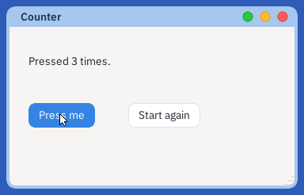
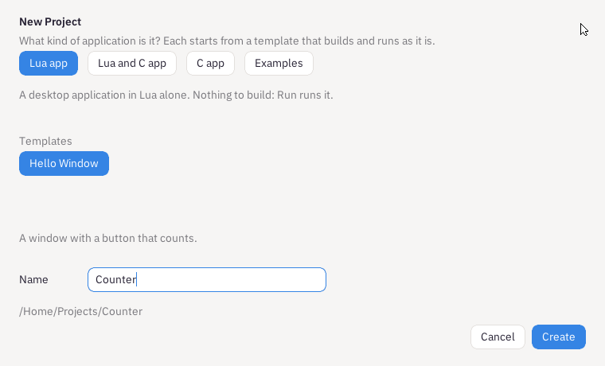
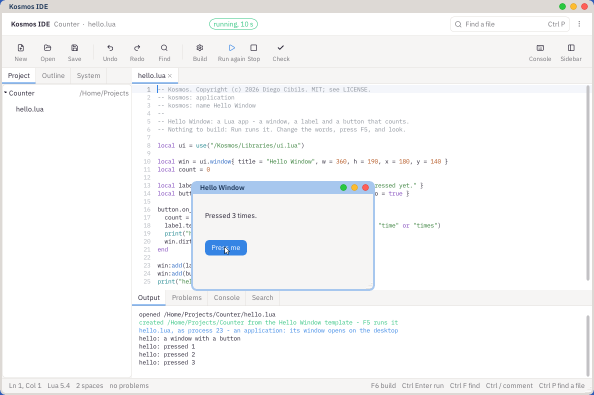

A window with a label and two buttons: one counts how many times it is pressed, and one starts again. It is the smallest whole application there is, and every other lesson grows from it.

What you will have at the end of this lesson.
Open the IDE from the Deskbar. In its row of tools, press New, then New Project. Choose Lua app, then the Hello Window template, type Counter as its name, and press Create.

New Project: what kind of application, which template, and its name.
The IDE copies the template into /Home/Projects/Counter and opens its one file, hello.lua.
local ui = use("/Kosmos/Libraries/ui.lua")
The UI kit: windows, labels, buttons and the rest. use is how a Kosmos program reaches anything the system supplies.
local win = ui.window{ title = "Hello Window", w = 360, h = 190, x = 180, y = 140 }
A window, with its title, its size and where on the screen it opens.
local label = ui.label{ x = 24, y = 34, w = 312, text = "Not pressed yet." }
local button = ui.button{ x = 24, y = 92, text = "Press me", go = true }
A label and a button, placed in the window. go = true gives the button the accent colour that says it is the one to press.
button.on_click = function()
count = count + 1
label.text = ("Pressed %d %s."):format(count, count == 1 and "time" or "times")
win.dirty = true
end
What happens on a press: count, change the label's words, and say the window has changed - win.dirty - so it is drawn again.
win:add(label) win:add(button) win:run()
Put them in the window, and run it: win:run draws the window and answers its events until it is closed.
Press Run in the tools, or F5. The window opens on the desktop; press its button a few times. What the program prints with print appears in the IDE's Output, below the code.

Running: the application's window on the desktop, and what it printed in Output.
Make it a counter that can start again. Change the window's title to "Counter" and add a second button under the first:
local reset = ui.button{ x = 150, y = 96, text = "Start again" }
reset.on_click = function()
count = 0
label.text = "Not pressed yet."
win.dirty = true
end
win:add(reset)
Put win:add(reset) before win:run() - nothing after run happens until the window is closed. Press F5 again: the old window closes and the new one opens.
The finished lesson is in Lesson's Project, under the three dots: 01-Counter.
ui.window asks Astra, the desktop, for a window: a message to its window manager, which answers with the window and its size. When your window is drawn, the UI kit sends what it looks like - the label's words, the button's shape - and Astra puts it on the screen with everything else. A press on the button comes back to your program as an event, which win:run collects and hands to on_click. Your program never touches the screen and never needs to: what it was not given, it cannot reach.
Kosmos's own Calculator is this lesson grown up: a window, a label for the answer, and a grid of buttons. Open the IDE's System tab, then /Kosmos/Apps, then calc.lua, and read it.